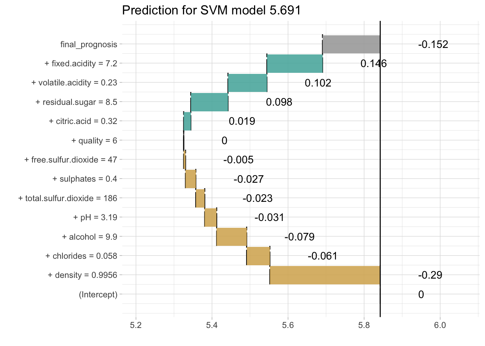
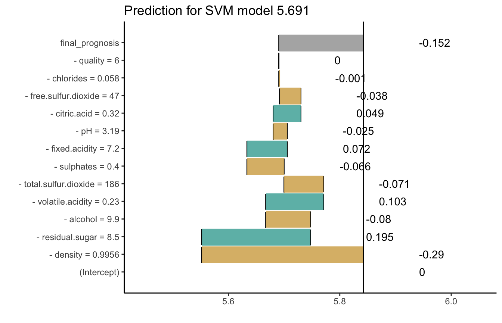

How to use breakDown package for SVM models
Przemyslaw Biecek
2018-04-06
This example demonstrates how to use the breakDown package for models created with the kernlab package.
library("breakDown")
library(kernlab)
wine_svm_model <- ksvm(quality~., data = wine)
wine_svm_model
#> Support Vector Machine object of class "ksvm"
#>
#> SV type: eps-svr (regression)
#> parameter : epsilon = 0.1 cost C = 1
#>
#> Gaussian Radial Basis kernel function.
#> Hyperparameter : sigma = 0.080027909797691
#>
#> Number of Support Vectors : 4195
#>
#> Objective Function Value : -2273.206
#> Training error : 0.52435
# or with the e1071:::svm
library(e1071)
wine_svm_model <- svm(quality~., data = wine)
wine_svm_model
#>
#> Call:
#> svm(formula = quality ~ ., data = wine)
#>
#>
#> Parameters:
#> SVM-Type: eps-regression
#> SVM-Kernel: radial
#> cost: 1
#> gamma: 0.09090909
#> epsilon: 0.1
#>
#>
#> Number of Support Vectors: 4176Now we are ready to call the broken() function. Since kernlab is useing S4 methods we need to pass here the hook to kernlab:::predict method.
library("breakDown")
nobs <- wine[5, , drop = FALSE]
base_prediction <- predict(wine_svm_model, nobs)
set.seed(1313)
explain_5_up <- broken(wine_svm_model, new_observation = nobs,
data = wine, predict.function = predict,
baseline = "intercept", direction = "up")
explain_5_up
#> contribution
#> (Intercept) 0.000
#> + density = 0.9956 -0.290
#> + chlorides = 0.058 -0.061
#> + alcohol = 9.9 -0.079
#> + pH = 3.19 -0.031
#> + total.sulfur.dioxide = 186 -0.023
#> + sulphates = 0.4 -0.027
#> + free.sulfur.dioxide = 47 -0.005
#> + quality = 6 0.000
#> + citric.acid = 0.32 0.019
#> + residual.sugar = 8.5 0.098
#> + volatile.acidity = 0.23 0.102
#> + fixed.acidity = 7.2 0.146
#> final_prognosis -0.152
#> baseline: 5.842347
explain_5_down <- broken(wine_svm_model, new_observation = nobs,
data = wine, predict.function = predict,
baseline = "intercept", direction = "down")
explain_5_down
#> contribution
#> (Intercept) 0.000
#> - density = 0.9956 -0.290
#> - residual.sugar = 8.5 0.195
#> - alcohol = 9.9 -0.080
#> - volatile.acidity = 0.23 0.103
#> - total.sulfur.dioxide = 186 -0.071
#> - sulphates = 0.4 -0.066
#> - fixed.acidity = 7.2 0.072
#> - pH = 3.19 -0.025
#> - citric.acid = 0.32 0.049
#> - free.sulfur.dioxide = 47 -0.038
#> - chlorides = 0.058 -0.001
#> - quality = 6 0.000
#> final_prognosis -0.152
#> baseline: 5.842347And plot it.
library(ggplot2)
#>
#> Attaching package: 'ggplot2'
#> The following object is masked from 'package:kernlab':
#>
#> alpha
plot(explain_5_up) + ggtitle(paste0("Prediction for SVM model ", round(base_prediction, 3)))
